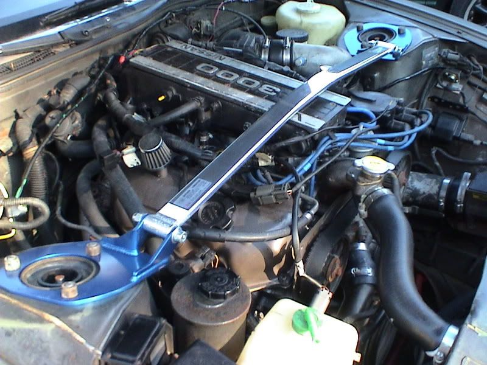

-
This thread will be updated as needed.
At first glance the Z31 has what an auto enthusiast and aspiring racer on a budget desires; front engine, rear wheel drive layout, available 5 speed, available turbo, low cost, reliability, and room for improvement.
Ah, but there is a catch! That pesky semi rear trailing arm design…sneaky snap over steer. No prob! We'll just upgrade the suspension. Ah, but there is another catch!
Aftermarket support for the Z31 chassis is limited. Respectable, but limited compared to the S13/14/15, B13 Z32, Z33, A32 even the S30!
But I'm here to help you guys who don't know what the deal is.
Here's my Suspension Upgrade Thread. Z31 Style.
Suspension and Chassis Stiffening Options:
Chassis Bracing:
There are 3 primary bracing products commercially available for your Z31. All make great bolt on upgrades due to ease, but don't perform best until the springs, struts, sway bars, and worn bushings have been upgraded first. This is because those latter components are likely going to give, compress, or deflect before the chassis does. When these components are upgraded and the chassis becomes the weak point of the suspension system, the additional bracing will begin to show its worth. Plus it looks cool.
Front Strut Tower Brace:
Courtesy of NissanEgg
Nissan Motorsports front sway bar 28.5mm. Comes with swaybar, bushings, 2 sets of endlinks of different lengths, and bushing brackets. Non-adjustable. Black sway bar color.
Cusco
Project Nissan
Courtesy Parts
Greddy/Trust/eBay
Rear Strut Tower Brace:
Cusco
Project Nissan
Courtesy Parts
Lower Rear Crossmember (1987-1989):
MFP
Sway Bars and End Links:
I separated End Links from the other bushings due the dramatic effect new Polyurethane bushings can have over your older units, and the amazing difference they have when used in conjunction with upgraded Sway bars.
End Links:
Energy Suspension
Prothane
MSA* (Adjustable)
*MSA REALLY dropped the ball on three major points. 1) Quality of SOME parts was OK, manufacturing of the assembly was poor. 2) Cost. Individually one could order and build the parts of the kit for 25% of the price. That's one off! They get this stuff in BULK. 3) Universal. Listed for use with any year Z31 doesn't actually mean it will fit your Z31. For starters there are two styles of front sway bar. With MSA design, the adjustabilty looses its worth on one design. More importantly IT DOES NOT FIT YOUR SWAY BAR! Doesn't fit the holes. $50 of junk.
Sway Bars:
Sway Bars are my second favorite initial handling upgrades, right after Tires. I put a rear sway bar, polyurethane sway bar bushings, and end links on every car I've owned except one. First you have to know what the stock size is. Too many people just buy the biggest one available. You should not do this. Your cars handling WILL suffer, especially on the Z31.
Nissan and Nismo:
22mm Front Sway Bar 84-89 NA, 84-86 Turbo
24mm Front Sway Bar 87-89 Turbo
26mm Front Sway Bar 1988 Shiro (NISMO Bar)
22mm Rear Sway Bar 84-89 NA, 84-3/87 Turbo
24mm Rear Sway Bar 4/87-89 Turbo
25mm Rear Sway Bar 1988 Shiro (NISMO Bar)
1984-86 front sway bars are horizontal mount, 1987-89 front sway bars are vertical mount.
MSA
Front - 25.4mm
Rear - 25.4mm
Addco
Front - 25.4mm
Rear - 25.4mm
Koni Rallysport (Discontinued):
Front - 29mm
Rear - 19mm (Fully Adjustable)
Rear End links - heim jointed turnbuckle/clamp
*** Similar items from different brands are ordered from Best to Lesser based on my personal opinion, based on Quality of Material, Manufacturing, and High Performance Usage.
-
Springs:
Time to get low. More options in this category.
Brand Rate lb/in" Drop in"
Nissan
88 SS 207 224 0*
84AE + 86T 146 188.2 0*
87-89 turbo 196 188.2 0*
All others 136.1 140 0*
Z31Part Z3R Type 1 325 300 1/0.5â
Type 2 325 300 1.5/1â
Suspension Technique 200 226 1â
Eibach 140-240 183-254 0.75â
Tokico 150 165 1â
Shocks:
We got the drop, but we need to control those spring oscillations, right?
Tokico Illumina
Bilstein HD
KYB
Tokico HP
*Illuminas don't come in NA form any more. âSo, I'll just use the turbo ones.â WRONG. Unfortunately for you, the Turbo strut tubes have a larger internal diameter than the NA tubes. Furthermore there are slight differences between the 84-86 tubes and 87-89 tubes that will change your camber stock for stock.
If you use Zenki tubes on a Kouki you will gain negative camber on stock vehicles, it's opposite, Visa versa. This may become a problem once you lower your ride height on an 87-89 car equipped with earlier tubes.
** If you have adjustable suspension, throw it in a box. If you can find replacement units you might no be able to afford them. Grab some nice Illuminas or Bilsteins. They are much better.
*** All rear struts interchange.
Strut Spacer:
Now its all good except for the steering wheel jerks in mid turn when you hit a bump. That's because the lowered car altered the suspension geometry, affecting your roll center and messing up your dang steering. You need these.
Z31Parts:
Camber Adjustment:
Now you are good, except you look like a tool because you wheels are all slanty and what not. Plus you tires are bald on the inside. Well buddy, sucks to be you. The Z31's Rear Semi Trailing Arm design doesn't provide stock camber adjustment. Nope, there isn't a bolt or upper mount you can buy to fix it. Just doesn't work like that. Ah but there is a solution. One that involves fabrication and removal of your rear crossmember. But we wont get into that. The front is also a bummer. You can order camber plates from Japan, if you speak Japanese. OH wait there is light on the horizon. A new American made camber kit for the front finished initial prototype testing and is available for purchase.
Cusco
BARTCO
*** Similar items from different brands are ordered from Best to Lesser based on my personal opinion, based on Quality of Material, Manufacturing, and High Performance Usage. -
Bushings, Mounts and Isolators
Bushings:
Basically, if you haven't replaced your Z31's bushings, it's time. Polyurethane bushings are more chemical resistance, prettier and allow less compression and deflection than your OEM bushings even if they were new. There are advantages over metal replacements as well, mainly in NVH, and decreased wear do to the unforgiving nature of metal bushings.
You will notice IMMEDIATE improvement in handling and ride. This has to be one of the BEST suspension upgrades for a Z31 from a cost stand point, but the effort required to install some bushings is beyond the abilities of quite a few Novices, or so they think…
Most bushings can be had in a kit from Prothane or Energy Suspension. Buy the kit and save money. There are some components you will have to buy separately.
Prothane:
Z31Parts Crossmember bushings
Z31Parts Transmission Damper Bushings
Z31Parts Steering Rack Bushings
Sway Bar Bushings
Z31Parts Poly Dust boots Kit
ISOLATORS
Arguably, just bushings, but mostly meant to isolate from noise and vibrations, more than a performance bushing i suppose. Whatever, here they are.
Z31Parts Engine Mount Isolators
Z31Parts Spring Seats Rear
Z31Parts Spring Seats Front
Z31Parts Transmission Isolator
Mounts:
These have a hard piece (metal) and soft piece (polyurethane) to replace OEM mounts. There are more in development.
*IF YOU ARE USING A POLY URETHANE DIFFERENTIAL MOUNT YOU MUST UTILIZE ALL REAR POLYURETHANE BUSHINGS AVAILABLE TO INSURE THE INTEGRITY OF YOUR REAR SUSPENSION SYSTEM.
Z31Parts Differential Mount (new version)
*** Similar items from different brands are ordered from Best to Lesser based on my personal opinion, Quality of Material, Manufacturing, and High Performance Usage. -
Re: The Basics: Z31 Suspension Options
Well now, here are some pics of my suspension upgrades, to give you a better idea where stuff goes if you have never been under the car.

-
Advanced Suspension Options
*Unlike the above items (which I own and installed) , I haven't performed any of these modifications (Mostly due to financial restraints).
I'm not going to hold your hand or spoon feed you, but I WILL point you in the right direction. Basically if you can't or wont search on your own volition for the specific information you need, then these options really aren't for you.
Here are some advanced options. All requir fabrication and money to some degree but the performance value is outstanding. PLUS it makes you that much cooler as you will be part of a very small, ELITE group of Z31 owners with VERY nice custom suspension setups.
Rear Camber Correction
The Z31 suffers from a rear suspension design that has a) squat issues b) extreme negative camber when lowered c) snap over steer.
Squat can be overcome with items from the above post. Snap oversteer can be countered with a combination of suspension upgrades improved skill on your part. Negative camber requires fabrication.
The concept is simple. Use the method for OEM Toe adjustment for camber adjustment also. You will need some brackets and eccentric bolts.

"Photo and pictures courtesy of Gary Molitar"
Adjustable Tension Rod
Hear is the deal. If you want good strait line performance, you don't want much negative camber. If you want great cornering, you want a bit more negative camber. Due to the caster, when you turn your front wheels the camber increase (positive) this is why cars come factory with static negative camber.
So you want better turn in and less wear on the outside of your tire, BUT you don't want to change your static camber too much and affect your strait line speed. Adjustable Tension Rods my friend. They will change caster enough to give you more negative camber when the wheels is turned.
Use in conjunction with camber plates.
ADJUSTABLE COIL-OVERS
If you really want to be serious about making your car competitive you need coil-overs to adapt to different track conditions.
There are no coil-over kits available for your Z31 in the US. There are a few in Japan.
http://www.jic-magic.com/ViewProduct1.aspx?ProductID=34
You will have to modify the front strut tubes in some manner depending on the "system" you are going with. Here are examples.
Ground Control or equivalent.
*If you use a Ground Control type you may need to use some type of device to keep the spring from falling of the perch if the suspension is fully unloaded.
(Notice the cable)
/Forums/ZForums/Suspension/Z31GroundControlKit.jpg" alt="" />
Serial Nine Adapters with Stance GR+ 3 Way Coilovers
(this is the way I plan to go)
S13 Coil-over REAR
There is concern that the rear strut location isn't strong enough to carry the weight of the car. The J30 has similar rear suspension design and utilize a coil-over-strut design.
SUPER ADVANCED SUSPENSION OPTION:
Swap in a Z32/S14/S15 Sub-frame
Why? If you have to ask, this isn't for you.
Z32 NA Sub-frame
S15 Sub-frame

Copyright © 2006–. All rights reserved. Privacy Policy